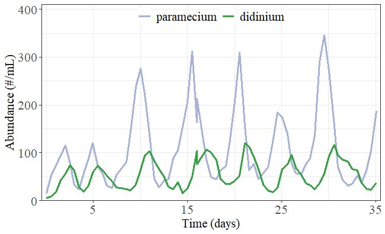

Information Imbalance and Imbalance Gain
Wenbo Lyu
Last
update: 2026-09-30
Last run: 2026-09-30
Source: Last run: 2026-09-30
vignettes/main1_imbalance.Rmd
main1_imbalance.RmdIntroduction
Imbalance Gain
The Imbalance Gain (IG) quantifies the information imbalance that a variable \(X\) provides about the future state of another variable \(Y\). To assess the information transfer \(X \rightarrow Y\), IG compares the neighborhood structure of the future state of \(Y\) with that of an augmented present state containing both \(X\) and \(Y\).
The basic quantity is the Information Imbalance between two distance spaces \(A\) and \(B\):
\[ \Delta(A \rightarrow B) = \frac{2}{N} \left\langle r^B \mid r^A \leq k \right\rangle, \]
where \(r^A\) and \(r^B\) are the distance ranks in spaces \(A\) and \(B\), respectively, and \(k\) is the number of nearest neighbors considered. A small \(\Delta(A\rightarrow B)\) indicates that points close in \(A\) also tend to be close in \(B\). The distance rank in one space therefore provides information about the structure of another space.
For \(X \rightarrow Y\), let \(d_Y(0)\) denote the distance space constructed from the present state of \(Y\), and let \(d_{XY}^{\alpha}(0)\) denote the corresponding space after incorporating \(X\) with a relative scaling parameter \(\alpha\). The future state of \(Y\) is represented by \(d_Y(\tau)\), where \(\tau\) is the prediction horizon. The Imbalance Gain evaluates
\[ \Delta(\alpha) = \Delta \left(d_{XY}^{\alpha}(0) \rightarrow d_Y(\tau) \right). \]
If \(X\) contains information about the future of \(Y\), adding \(X\) should reduce the Information Imbalance. The resulting Imbalance Gain is
\[ \delta\Delta(X \rightarrow Y) = 1 - \frac{\min_{\alpha}\Delta(\alpha)}{\Delta(0)}. \]
Here, \(\Delta(0)\) represents prediction using \(Y\) alone, whereas \(\min_{\alpha}\Delta(\alpha)\) represents the best prediction obtained after incorporating information from \(X\). \(\delta\Delta(X \rightarrow Y)=0\) indicates no gain from adding \(X\), while a positive value indicates that \(X\) provides additional information about the future state of \(Y\).
The same calculation can be performed in the opposite direction, \(Y\rightarrow X\), allowing directional information transfer to be assessed for both directions.
Conditional Imbalance Gain
The Conditional Imbalance Gain (CIG) extends the Imbalance Gain to assess the additional information provided by \(X\) about the future state of \(Y\) conditional on a third variable \(Z\). The present state of \(Z\) is incorporated into the baseline prediction, and the contribution of \(X\) is evaluated relative to this baseline.
Let \(d_{YZ}^{\alpha_Z}(0)\) denote the distance space constructed from the present states of \(Y\) and \(Z\), with \(\alpha_Z\) controlling the relative scaling of \(Z\). After incorporating \(X\) with scaling parameter \(\alpha_X\), the augmented distance space is denoted by \(d_{XYZ}^{\alpha_X,\alpha_Z}(0)\). The Conditional Imbalance Gain is defined as
\[ \delta \Delta (X \rightarrow Y \mid Z) = 1- \frac{ \min\limits_{\alpha_X,\alpha_Z} \Delta \left( d_{XYZ}^{\alpha_X,\alpha_Z}(0) \rightarrow d_Y(\tau) \right)} {\min\limits_{\alpha_Z} \Delta \left(d_{YZ}^{\alpha_Z}(0) \rightarrow d_Y(\tau) \right)}. \]
The denominator represents the best prediction of the future state of \(Y\) using \(Y\) and \(Z\) at the present state. The numerator represents the best prediction after additionally incorporating \(X\). A positive \(\delta\Delta(X\rightarrow Y\mid Z)\) indicates that \(X\) provides additional predictive information about the future state of \(Y\) beyond that contained in \(Y\) and \(Z\).
For a fixed \(\alpha_X\), the corresponding conditional Imbalance Gain is
\[ \delta \Delta(X\rightarrow Y\mid Z;\alpha_X) = 1- \frac{ \min\limits_{\alpha_Z} \Delta \left(d_{XYZ}^{\alpha_X,\alpha_Z}(0) \rightarrow d_Y(\tau) \right)} {\min\limits_{\alpha_Z} \Delta \left( d_{YZ}^{\alpha_Z}(0) \rightarrow d_Y(\tau) \right)}. \]
The optimal \(\alpha_X\) can then be obtained by minimizing the conditional Information Imbalance over the range of \(\alpha_X\). The same formulation can be applied in the reverse direction to assess \(Y\rightarrow X\mid Z\).
Example Cases
We illustrate the Imbalance Gain using the Paramecium–Didinium abundance data from the convergent cross mapping science paper. The data describe the temporal variation in the abundances of Paramecium and Didinium, providing a simple example for evaluating causal association between two interacting species.
abun = readr::read_csv(
system.file("case/abundance.csv", package = "pc"
))[, c("paramecium", "didinium")]
head(abun)
## # A tibble: 6 × 2
## paramecium didinium
## <dbl> <dbl>
## 1 15.6 5.76
## 2 53.6 9.05
## 3 73.3 17.3
## 4 93.9 42.0
## 5 115. 56.0
## 6 76.6 74.9The Paramecium–Didinium abundance time series can be visualized as follows:
fig_abun = read.csv((system.file("case/abundance.csv",
package = "pc"))) |>
tidyr::pivot_longer(cols = -time,
names_to = "species", values_to = "value") |>
dplyr::mutate(species = factor(species,
levels = c("paramecium", "didinium"),
labels = c("paramecium", "didinium"))) |>
ggplot2::ggplot(ggplot2::aes(x = time, y = value, color = species)) +
ggplot2::geom_line(linewidth = 1.05) +
ggplot2::scale_x_continuous(breaks = seq(5, 35, 10), limits = c(-0.5, 35.5),
expand = c(0, 0), name = "Time (days)") +
ggplot2::scale_y_continuous(breaks = seq(0, 400, 100), limits = c(0, 410),
expand = c(0, 0), name = "Abundance (#/mL)") +
ggplot2::scale_color_manual(name = NULL,
values = c("paramecium" = "#a7b3d9",
"didinium" = "#38a247")) +
ggplot2::theme_bw(base_family = "serif") +
ggplot2::theme(
legend.direction = "horizontal",
legend.position = "inside",
legend.justification = c("center","top"),
legend.background = ggplot2::element_rect(fill = "transparent",
color = "transparent"),
legend.text = ggplot2::element_text(size = 15),
axis.text.x = ggplot2::element_text(size = 15),
axis.text.y = ggplot2::element_text(size = 15),
axis.title.x = ggplot2::element_text(size = 15),
axis.title.y = ggplot2::element_text(size = 15))
fig_abun
The observed time series are reconstructed using time-delay embedding to obtain the shadow manifolds (measurements). The reconstructed measurements are then used to evaluate the causality between the two interacting species.
The Imbalance Gain is subsequently calculated to quantify the additional information provided by one species about the future state of the other. The analysis is performed in both directions, \(paramecium \rightarrow didinium\) and \(didinium \rightarrow paramecium\).
p_self_imb = purrr::map_dbl(
1:50,
\(.h) infoxtr::imbalance_gain(mp, mp, alpha = 0,
h = .h, threads = 10))
d_self_imb = purrr::map_dbl(
1:50,
\(.h) infoxtr::imbalance_gain(md, md, alpha = 0,
h = .h, threads = 10))
ig_p2d = infoxtr::imbalance_gain(mp, md, alpha = seq(0,1,by = 0.05),
h = 10, threads = 10)
ig_d2p = infoxtr::imbalance_gain(md, mp, alpha = seq(0,1,by = 0.05),
h = 10, threads = 10)
cat(sprintf("Imbalance Gain for paramecium -> didinium: %.2f %%\n", 100 * 1 - min(ig_p2d) / ig_p2d[1]))
## Imbalance Gain for paramecium -> didinium: 99.06 %
cat(sprintf("Imbalance Gain for didinium -> paramecium: %.2f %%\n", 100 * 1 - min(ig_d2p) / ig_d2p[1]))
## Imbalance Gain for didinium -> paramecium: 99.00 %The imbalance gains for \(paramecium \rightarrow didinium\) and \(didinium \rightarrow paramecium\) are both greater than \(0\), which provides evidence of a bidirectional causal relationship between them.